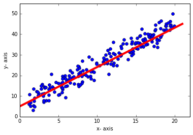
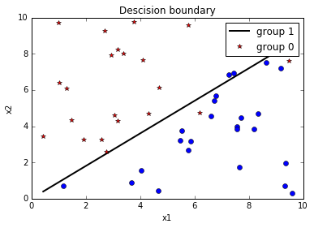
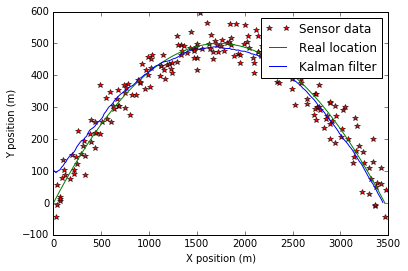
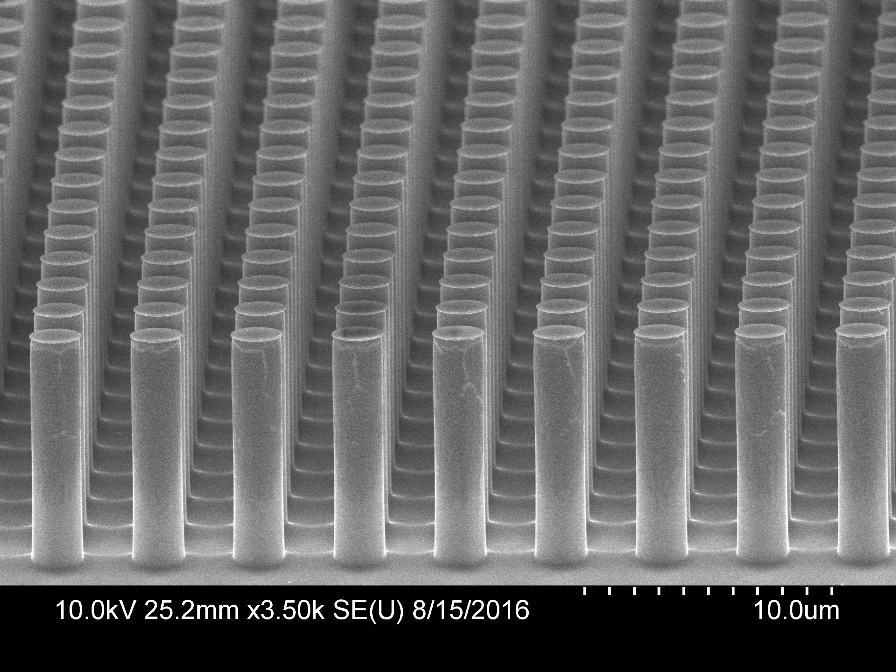
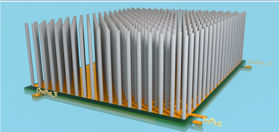

Adimali's Blog
Home
Experimenting with notMNIST dataset
Image source : yaroslavvb.blogspot.com
Linear regression

Logistic regression

Kalman Filters

Monte Carlo simulation
MEMS Fabrication

Finite element analysis using Comsol

 Image source : yaroslavvb.blogspot.comImage source : yaroslavvb.blogspot.com
Image source : yaroslavvb.blogspot.comImage source : yaroslavvb.blogspot.com